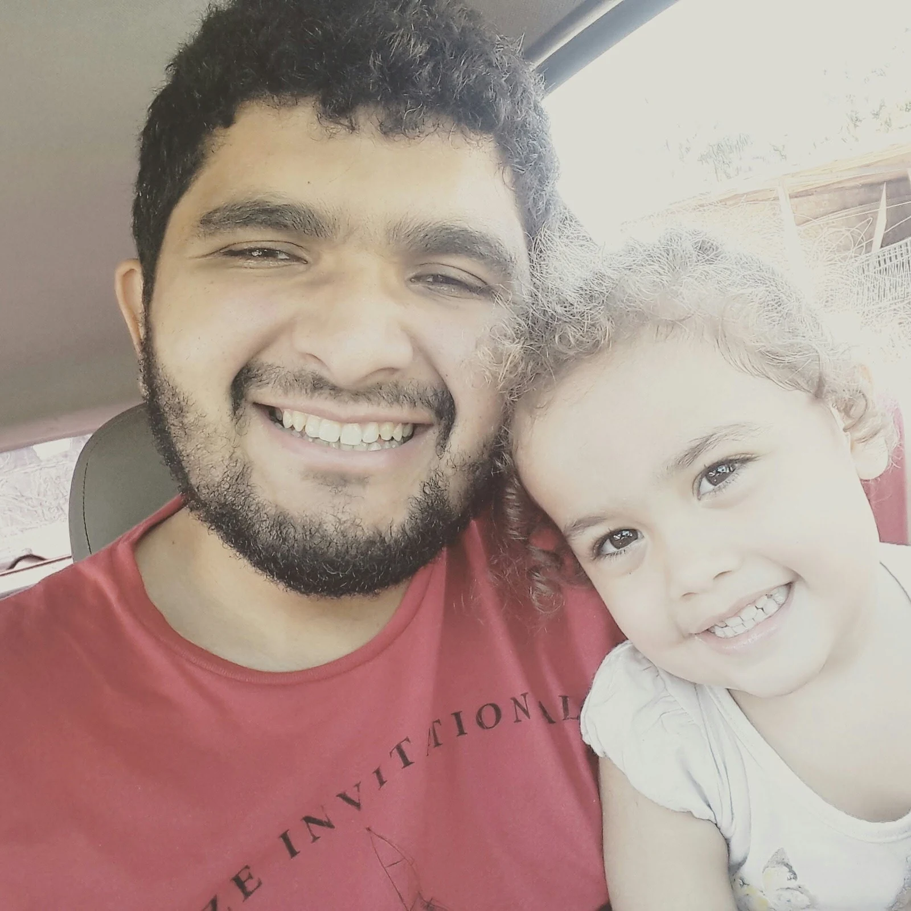
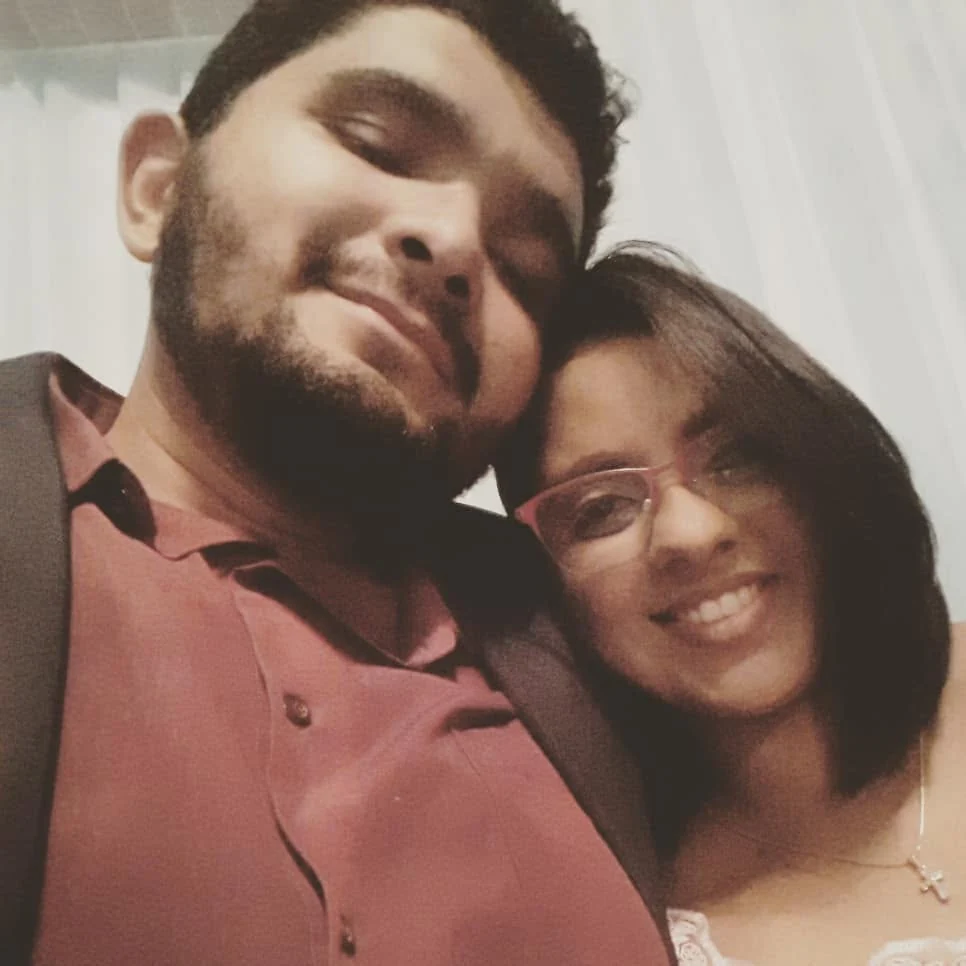
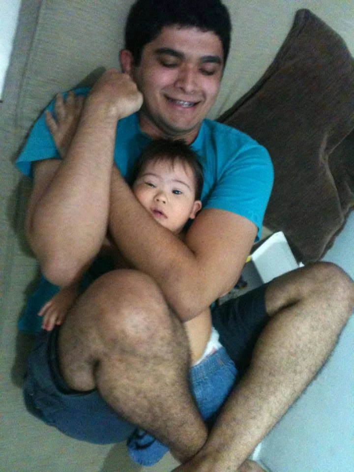
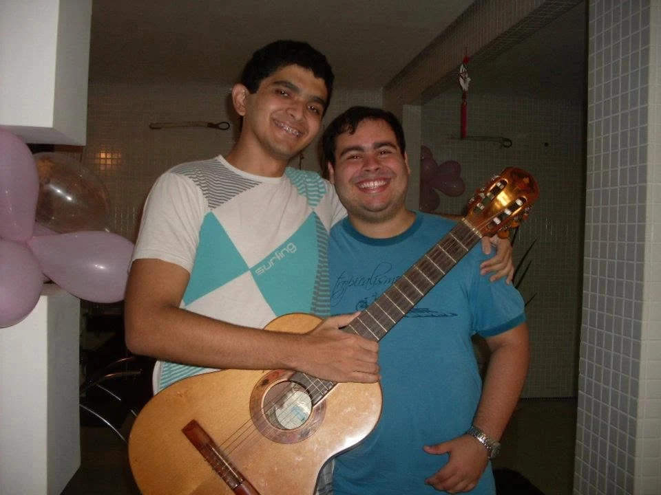

CAPÍTULO 01
OS PRIMEIROS PASSOS
Colégio Ideal
Onde parte da jornada de aprendizado e das primeiras grandes histórias ganhou forma.
Uma homenagem a quem faz os dias valerem a pena.

Júnior é dessas pessoas que carregam boas histórias, colecionam amizades e fazem cada encontro virar lembrança. Hoje a gente celebra tudo o que ele viveu — e o tanto de coisa boa que ainda vai acontecer.
Das salas de aula aos novos desafios, cada capítulo fez parte da pessoa que ele se tornou.
Onde parte da jornada de aprendizado e das primeiras grandes histórias ganhou forma.
O olhar para o mundo se ampliou na Universidade Federal do Pará, entre descobertas e desafios.
Uma formação recente, celebrando a vontade de aprender, recomeçar e construir novos caminhos.


Entre tantas conquistas, existem as que não cabem em diplomas nem em fotografias: o amor, os abraços e a alegria de estar perto de quem a gente ama.
Fã de rock e apaixonado por tocar violão, Júnior sabe que os melhores momentos merecem uma trilha sonora à altura.

O tempo muda muita coisa. O carinho que existe nessas fotos, não. Escolha uma lembrança e mergulhe nela.
As boas histórias começam cedo.
Dica: clique na foto para ver em tela cheia. No celular, deslize para passar as fotos. ♡
Algumas coisas merecem ser ditas em voz alta. Toque nos bilhetinhos para descobrir os nossos votos para o aniversariante.
Escreva um recadinho e envie pelo WhatsApp ou copie para mandar onde quiser.
Que os 37 venham com saúde, paz, amor, música boa e incontáveis motivos para celebrar. O melhor da sua história ainda está sendo escrito.
37 ANOS • MUITAS HISTÓRIAS • O MELHOR AINDA VEM